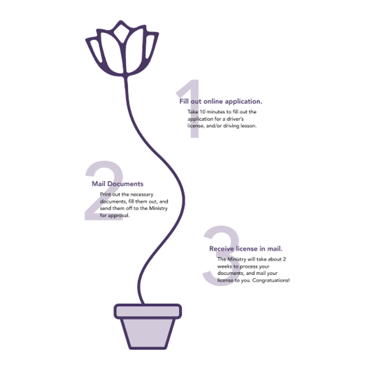
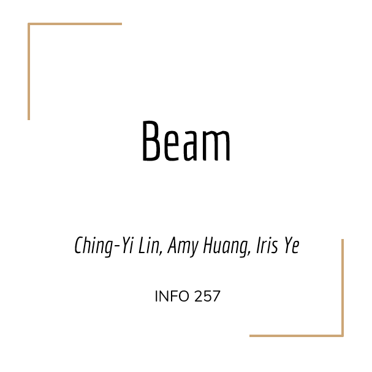
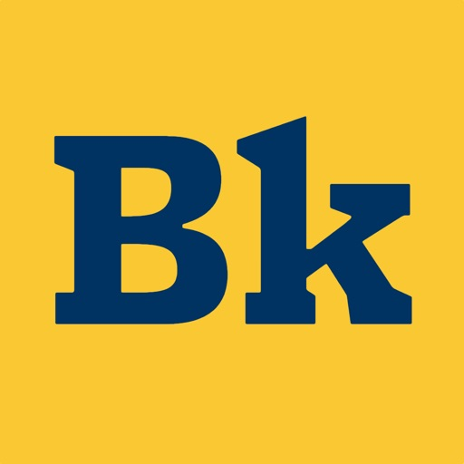
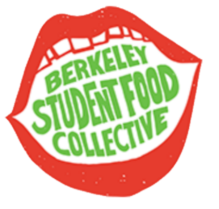
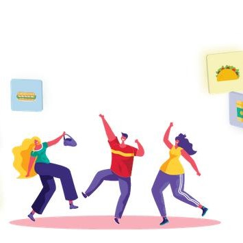
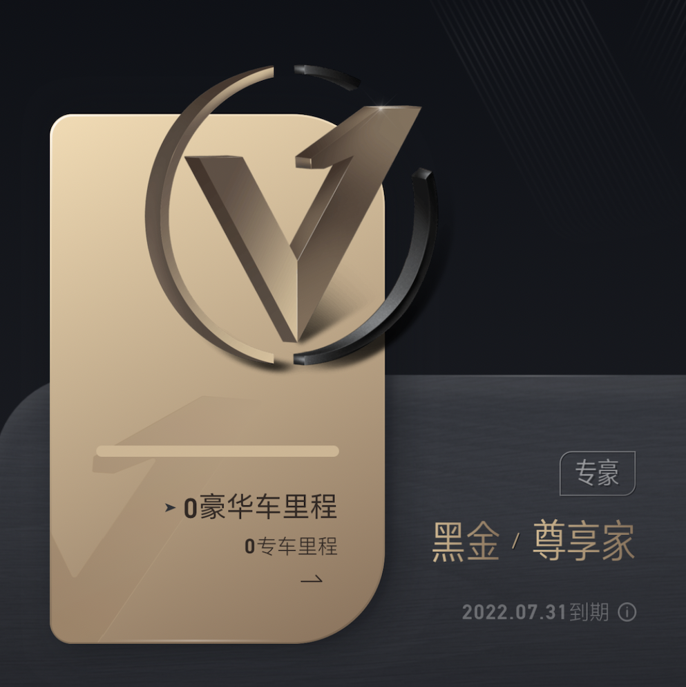
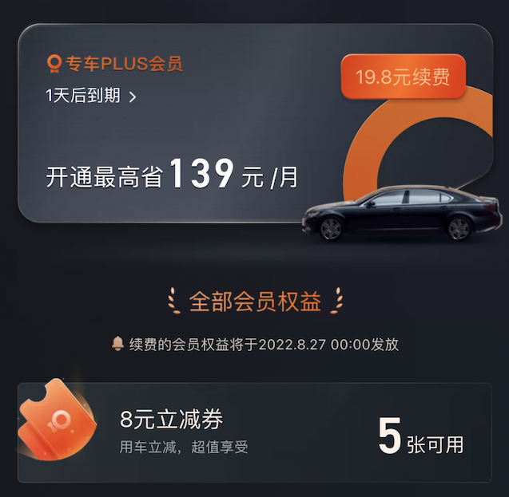

I'm a first year graduate student at University of Michigan, School of Information. With three years of product management experience, my focus had been on user mobile experience. As the sole undergrad product manager return offeree at Uber China (DiDi) ride-hailing sector, I own the roadmap for DiDi Premier product line. By implementing the driver performance evaluation system, I helped DiDi increased transaction rate by 5% (average waiting time down by 20%). Besides, I also launcghed Premier discount system and it led to 50% increase of weekly rides. I built DiDi driving school service from 0 to 1. The launched MVP had served 1000+ users within a month and brought in over 50% profit margin (the profit margin of Premier service is ~5%).
Besides my job, I have been devoting majority of spare time in helping the most vulnerable populations. Since 2018, I had been training post-release inmates on their technical skills. I developed Information Bootcamp for 20+ post-release inmates and helped 10+ secured jobs in information field. I'm well aware that I'm lucky to have been growing up with digital era while there are tons of non-profits lacked behind. By assisting Child and Family Services on search engine optimization during pandemic, I grew their website traffic by 30% which led to exposure of 50+ nations worldwide. I devote my knowlegde in digital transformation for individual or organization in need.
Below are the products I've been managed.
      